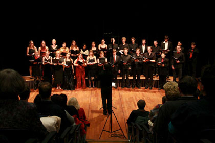
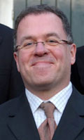

studentenkoor

 concerten
concerten
Vokollage zal tijdens de tournee de volgende concerten verzorgen:
- dinsdagavond 13 juli 2010: Medemblik, Bonifaciuskerk
- woensdagavond 14 juli 2010: Enkhuizen, Zuiderkerk
- zaterdagavond 17 juli 2010: Amsterdam, binnenplaats AHM
gemengd koor
Vokollage is het gemengd koor van ESMG Quadrivium, en telt momenteel zo'n 20 leden. Er wordt gezongen in de gebruikelijke SATB-bezetting (sopranen, alten, tenoren en bassen). Dankzij het grote aantal mannelijke studenten aan de Technische Universiteit heeft Vokollage een voor koorbegrippen relatief grote herensectie, wat zorgt voor een mooie balans in de koorklank.
Vokollage heeft in de afgelopen jaren een aantal spetterende concerten verzorgd waarbij gevarieerde muziekstijlen aan bod kwamen. Daarbij is vaak samengewerkt met de andere ensembles en orkesten van Quadrivium (harmonieorkest Auletes, kamerorkest Ensuite en blokfluit ensemble Sambuca), andere (studenten-)koren evenals bekende zangsolisten uit de regio.
dirigent
Vokollage staat onder de bezielende leiding van dirigent Ruud Huijbregts. Hij studeerde orgel, harmonium en koordirectie aan het Brabants Conservatorium te Tilburg en volgde diverse cursussen o.a. bij Luigi Tagliavini en Albert de Klerk.
Naast zijn werk als koordirigent is hij muzikaal actief als organist, klavecinist en contiuospeler. Ruud Huijbregts gaf al vele concerten in het binnen- en buitenland en verzorgde diverse radio-, televisie- en cd-opnamen.